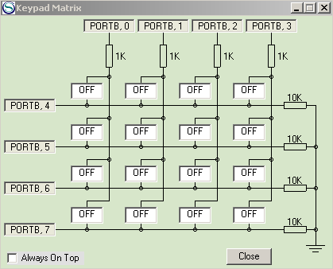

Ejercicio 5: Uso de PIO para la
exploración de un teclado matricial
1. Objetivo
Los teclados matriciales son el periférico preferido para
permitir a un usuario introducir códigos
numéricos en un sistema gestionado por un microcontrolador
(o pequeño microprocesador). Estos teclados usan una matriz
de contactos, en los que las coordenadas (fila y columna) del contacto
cerrado dan la posición del botón pulsado.
Los teclados matriciales no emplean interrupciones, sino que su lectura
debe hacerse mediante un proceso periódico de
exploración (scan),
operando en modo PIO. Este ejercicio tiene como objetivo familiarizar
al alumno con esta técnica de exploración de un
teclado matricial, y emplearlo para leer los valores introducidos a
través de un teclado hexadecimal.
2. Sistema de test
El sistema de test simulado va a usar:
un display de 7 segmentos, conectado al puerto PORTC, para
representar el valor hexadecimal leído del teclado.
un teclado Keypad
Matrix (que se puede encontrar en el menú Tools del PIC
Simulator IDE), conectado a las 8 lineas del puerto PORTB.

En el teclado matricial tenemos 16 contactos (pulsadores), organizados
en 4 columnas y 4 filas (por defecto las columnas están
conectadas a los bits 0 a 3 del puerto B, y las filas a los bits 4 a
7). Como se observa, una fila puede tomar estos valores:
Si todos los contactos de la fila están abiertos
(OFF), la
fila toma el valor 0
(0V).
Si alguno de los contactos de la fila está
cerrado (ON),
la fila tomará el valor que se le haya dado a la columna (1 si la columna
está a +V, o 0
si la columna está a 0V).
Es posible entonces detectar el estado de ON/OFF de uno, o
más, de los pulsadores de teclado, siguiendo un
procedimiento sistemático de exploración
periódica:
Se elige la primera fila del teclado.
Para cada uno de los cuatro pulsadores de la fila se prueba
su estado:
Se da el valor 1
(+V) a su columna correspondiente.
A continuación, se lee el valor que ha tomado
la
fila; 0
indica pulsador abierto (OFF), y 1
indica pulsador cerrado (ON).
Finalmente, se devuelve a 0 el valor de la
columna.
Se repite este procedimiento con las restantes filas del
teclado
Obviamente, todo este proceso se realiza usando E/S en modo PIO,
haciendo operaciones de escritura sobre los bits asignados a las
columnas, y de lectura sobre los bits asignados a las filas.
Es interesante realizar dos observaciones:
La exploración puede hacerse indistintamente por
filas o por columnas; el resultado final será el mismo.
El método de exploración
periódica permite detectar tanto la pulsación de
teclas como su liberación.
3. Práctica a realizar
El alumno deberá implementar un driver de dispositivo en
BASIC que realice las siguientes funciones:
Mediante exploración periódica a
través del puerto B (¡ojo a TRISB!), leer valores
entre 0 y 15 introducidos con un teclado hexadecimal.
Usando el display de 7 segmentos conectado al puerto C,
representar el valor hexadecimal leído, que será
mostrado en el display tan pronto se detecte la pulsación de
la tecla.
Indicar el estado de pulsación o
liberación de la tecla con el punto decimal del display, de
forma que el punto permanecerá encendido mientras la tecla
esté pulsada, mientras que se apagará cuando la
tecla sea liberada.